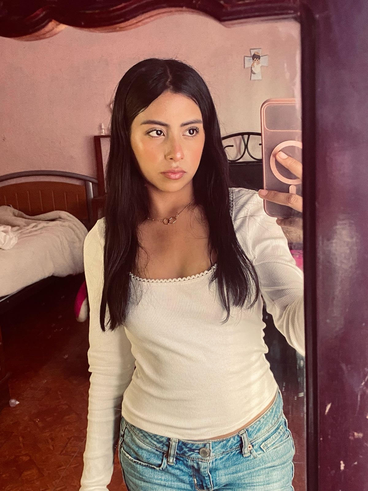

JENNI
Hola, me llamo Jennifer Martinez Hernandez y tengo 16 años,mi cummpleaños es el 11 de julio,
soy morenita,delgada,ojos grandes de color negro,cabello largo de color negro mi color favorito
es el color lila, mi comida favorita son las enchiladas
verdes, me gustan los girasoles,los
atardeceres y los perritos y me gusta escuchar musica, escucho de diferentes generos pero mi
cantante favorito es Rauw Alejandro y actualmente curso el 4to semestre de preparatoria, y tengo 4 perritas